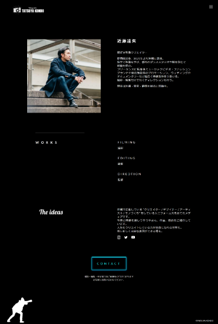

サイト概要
フリーランス映像クリエイター近藤達矢のポートフォリオ。
ターゲット
映像作品やPR動画を必要とする個人・法人
ブライダルの映像を撮りたいカップル
ゴール
世界観や表現の幅を伝える。
使用ツール
XD/Photoshop/SCSS/jQuery/Google Fonts/Font Awesome
デザインコンセプト
インパクトのあるファーストビュー。
作品を主役にするためモノクロで出来るだけシンプルに。
ポイントでイラストを配置し遊び心を出す。
振り返り
当初ベースカラーに白を使用しモノクロのサイトを制作しておりましたが、希望によりベースカラーを黒に変更。サイト全体の雰囲気や作品の見え方が全く異るため、ファーストビューの映像やフォント、アクセントカラーを変更しデザインの修正を行いました。
クライアントとの対話を大切にし、企画の段階でデザイン案をしっかり落とし込むことの重要性に気付くことができました。
